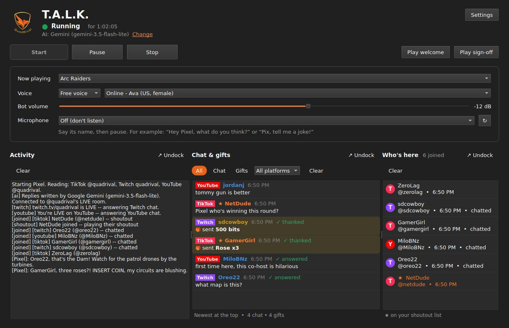
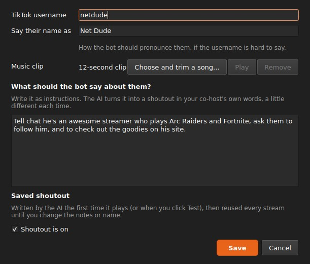
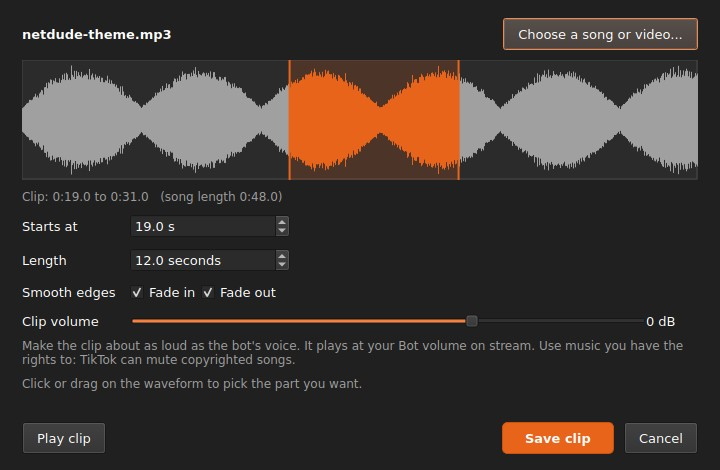
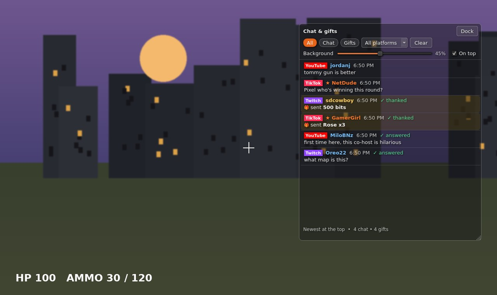

A co-host that talks back to your chat.
T.A.L.K. is a Windows app that sits next to your game. It reads your TikTok, Twitch and YouTube chat, answers viewers out loud in a voice and personality you design, and thanks every gift, bit and Super Chat. You keep playing.
30 days free. No card needed to try it. Windows 10 and 11.
- TwitchOreo22
what map is this?
- Pixel
Oreo22, that's the Dam! Watch for the patrol drones by the turbines.
- TikTokGamerGirl
sent Rose x3
- Pixel
Three roses?! Insert coin, my circuits are blushing. Thank you, GamerGirl!
- YouTubeMiloBNz
first time here, this co-host is hilarious

What your co-host does
Answers chat, on every platform at once
Viewers on TikTok, Twitch and YouTube all get answers, out loud, in the same voice. Messages that call your co-host by name jump the line. When chat is busy it keeps up; when chat is quiet it can tell a story, crack a joke or talk about the game, or stay quiet. You choose.
Thanks everyone who supports you
TikTok gifts, Twitch bits, subs and raids, YouTube Super Chats and memberships each get a thank-you. A streak of gifts gets one combined thank-you instead of twenty.
A character that's yours
Describe who you want, a grumpy retired pirate, a glitchy arcade cabinet, and the AI writes the personality, catchphrases, stories and jokes. Edit any of it. Pick from free voices that run on your PC, or connect ElevenLabs for the most natural voices.
Talk to it with your mic
Say its name and ask something mid-game. It answers you like a co-host sitting next to you.
Shoutouts with their own entrance music
Make a list of viewers you want to celebrate. When one of them shows up, your co-host welcomes them by name, plays their music clip, then tells chat about them from your notes. Cut the clip from any song or video right in the app, 5 to 15 seconds, with fades.
Each shoutout is written once and saved with its audio, so it plays instantly on every stream after that.


Chat over your game
Pop out the chat, the activity log or the list of who joined into small windows and put them anywhere, even over a borderless game. Fade the background as far as you like; the text stays sharp.

What you'll need
- A Windows 10 or 11 PC. T.A.L.K. installs for your account only; no admin password needed.
- An AI key of your own. Google Gemini has a free tier that's plenty for most streams. Claude from Anthropic works too, paid by use. The setup wizard shows you how to get either one.
- A voice. The free voices are included. ElevenLabs is optional and billed by ElevenLabs.
- Your stream. A TikTok, Twitch or YouTube channel, or all three. YouTube needs a free key from Google; the app walks you through it.
Your keys stay on your PC. T.A.L.K. doesn't run a server between you and your AI or your stream.
Pricing
One plan with everything in it. Try it free for 30 days, then subscribe from inside the app.
Monthly
$20 per month
Cancel anytime. You keep access until the end of the month you paid for.
Yearly
$200 per year
Two months free compared with monthly. Billed once a year; cancel anytime and keep access until the end of the year you paid for.
- Every feature on this page
- TikTok, Twitch and YouTube together
- All updates while you're subscribed
- For one PC at a time; moving to a new PC is a click in Settings
Prices in US dollars. Sales tax or VAT is added at checkout where it applies. Payments are handled by Lemon Squeezy, our reseller and merchant of record. AI and ElevenLabs usage is billed separately by those services, if you use paid plans.
Start your free trial
Download the installer, open it, and the setup wizard walks you through the rest in about five minutes.
Download T.A.L.K. for WindowsFree for 30 days, no card needed. If Windows shows "Windows protected your PC", click More info, then Run anyway.
Questions
Do I have to pay for the AI too?
Not necessarily. With a free Google Gemini key, most streamers pay nothing for the AI. If you choose Claude or ElevenLabs instead, those companies bill you directly for what you use. T.A.L.K. shows which AI and model you're using at all times.
What happens after the 30-day trial?
The app asks you to subscribe. Pick monthly or yearly, pay through Lemon Squeezy, and the license key you get by email unlocks T.A.L.K. If you don't subscribe, it stops answering chat; your settings stay on your PC in case you come back.
How do I cancel?
Use the link in your Lemon Squeezy receipt email, or email us. You keep access until the end of the period you paid for, and you won't be charged again.
Can I get a refund?
Yes, within 14 days of your first payment. See the refund policy.
Does it work with TikTok LIVE Studio and OBS?
Yes. The voice plays like any other app on your PC. In OBS, add an Application Audio Capture source and pick the T.A.L.K. bot window. TikTok LIVE Studio picks it up as an app.
Will viewers know it's an AI?
Yes, if they ask. Your co-host plays its character, but it never pretends to be a person when someone sincerely asks, and it never pretends to be you.